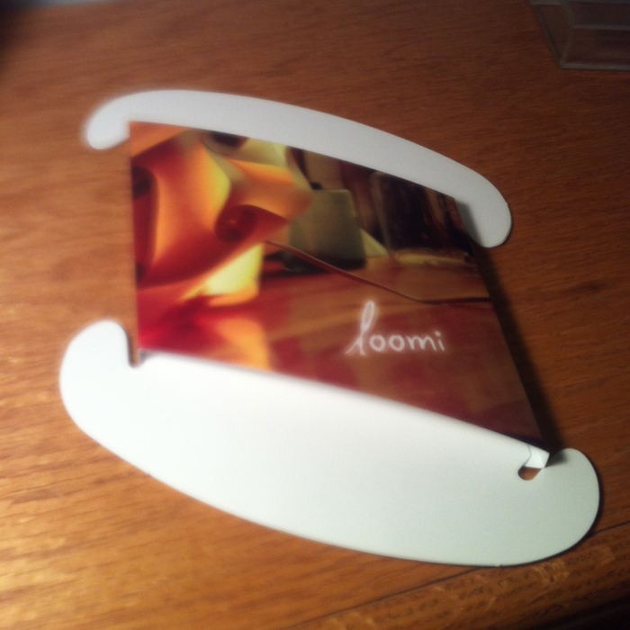
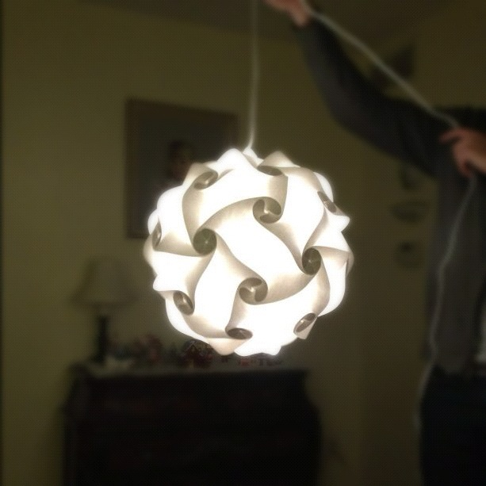

<!DOCTYPE html>
<html lang="en">
  <head>
        <meta charset="UTF-8" />
    <link rel="alternate" type="application/rss+xml" title="RSS" href="/rss.xml" />
    <meta name="viewport" content="width=device-width" />

    <!-- <link href="assets/css/meny.css" rel = "stylesheet"> -->
    <link href="theme/css/main_pelican.css" rel="stylesheet">

    <link rel="apple-touch-icon-precomposed" href="media/blog_logo.png"/>
    <link rel="shortcut icon" href="media/blog_logo.png"/>
    <link href='http://fonts.googleapis.com/css?family=PT+Sans:400,700|Merriweather:300,900' rel='stylesheet' type='text/css'>

    <title>Jay Hickey</title>

    <!-- Google Analytics -->
    <script type="text/javascript">
    var _gaq = _gaq || [];
    _gaq.push(['_setAccount', 'UA-32102758-1']);
    _gaq.push(['_setDomainName', 'none']);
    _gaq.push(['_setAllowLinker', 'true']);
    _gaq.push(['_trackPageview']);

    (function() {
      var ga = document.createElement('script'); ga.type = 'text/javascript'; ga.async = true;
      ga.src = ('https:' == document.location.protocol ? 'https://ssl' : 'http://www') + '.google-analytics.com/ga.js';
      var s = document.getElementsByTagName('script')[0]; s.parentNode.insertBefore(ga, s);
    })();
    </script>


<!--
    <link href="http://fonts.googleapis.com/css?family=Arimo:400,700|Inika" rel="stylesheet" type="text/css" />
    <link rel="stylesheet" type="text/css" href="./theme/bootstrap.css" />
    <link rel="stylesheet" type="text/css" href="./theme/pastie.css" />
    <link href="" type="application/atom+xml" rel="alternate" title="Jay Hickey Atom Feed" />
        <link href="rss.xml" type="application/rss+xml" rel="alternate" title="Jay Hickey RSS Feed" />
        
     -->

  </head>

  <body>
    <div class="meny-contents">


        <div id="mastheadbackground">&nbsp;</div>

        <section id="posts">

            <div id="masthead">
                <h1><a href="/">Jay Hickey</a></h1>

                <p id="description">Technology, life, and fascinating web encounters.</p>

                <nav>
                    <a href="about">About</a>
                    &nbsp;
                    |
                    &nbsp;
                    <a href="highlights"> Highlights</a>
                    &nbsp;
                    |
                    &nbsp;
                    <a href="twitter"> Twitter</a>
                </nav>
            </div>
        <div id="container">

            
                <article>
    
                <header>
                    <h2>
                                                    <a href="./2012/05/new-blog"
                            rel="bookmark">My New Blog!</a>
                                                                       </h2>

                    <p>
                        <time datetime="" pubdate="pubdate">May 28, 2012</time>
                        &#0020;
                        <a class="permalink" title="Permalink to My New Blog!" href="2012/05/new-blog">&#x271c;</a>
                    </p>
                </header>

                <p>I've finally gotten around to making my dream blog! I now have a snappy little site that is simple and allows me to post from any computer or iOS device I have in front of me. </p>
<p>Thanks to Marco Arment's awesome <a href="https://github.com/marcoarment/secondcrack">Second Crack</a>, all I do is to save a markdown draft to my dropbox. From there, Second Crack instantly creates a nice static preview html file that allows me to view my post exactly as it will appear when I commit it. When the post's ready to be published, I just move it into the <code>_publish-now/</code> directory or add a header that says "publish-now" in the markdown file. And it's done!</p>
<p>Marco has posted an awesome <a href="http://www.youtube.com/watch?v=cu5uXXulnNk">video demo</a> of this greatness in action.<sup id="fnref:blog"><a class="footnote-ref" href="#fn:blog" rel="footnote">1</a></sup></p>
<p>Installing Second Crack wasn't the easiest thing in the world, but thanks to Nick Wynja's awesome <a href="https://github.com/nickwynja/deploysecondcrack"><code>deploysecondcrack</code></a> and through <a href="http://nickwynja.com/deploysecondcrack">instructions</a>, it's definitely doable. Anyone with moderate SSH and command line knowledge can figure it out.</p>
<p>Because of it's simplicity, I'm hoping it encourages me to blog more often. Also, be prepared for drastic changes to the look and functionality of this blog in the coming weeks. Due to my amateur web development knowledge, some stuff will probably be broken too. But hey, <a href="http://spectrum.ieee.org/at-work/innovation/facebook-philosophy-move-fast-and-break-things">move fast and break things</a>, right?</p>
<div class="footnote">
<hr />
<ol>
<li id="fn:blog">
<p>There's some nifty bookmarklet action in the video — I haven't gotten around to messing with these yet. However, there's instructions for doing so on Marco's <a href="https://github.com/marcoarment/secondcrack">github</a> page.&#160;<a class="footnote-backref" href="#fnref:blog" rev="footnote" title="Jump back to footnote 1 in the text">&#8617;</a></p>
</li>
</ol>
</div>

            </article>
            <div class="fin">&#x2110;&#x210b;</div>

                <article>
    
                <header>
                    <h2>
                                                    <a href="./2011/12/my-favorite-christmas-gift"
                            rel="bookmark">Loomi: My Favorite Christmas Gift</a>
                                                                       </h2>

                    <p>
                        <time datetime="" pubdate="pubdate">December 28, 2011</time>
                        &#0020;
                        <a class="permalink" title="Permalink to Loomi: My Favorite Christmas Gift" href="2011/12/my-favorite-christmas-gift">&#x271c;</a>
                    </p>
                </header>

                <p>I love the <a href="http://loomilight.com/">Loomi</a> light that my sister got me for christmas. It looks so cool, and the DIY aspect of putting it together just adds to the fun. Here's how the creators describe the Loomi on their <a href="http://www.kickstarter.com/projects/623521323/loomi-a-modular-light-of-paper">Kickstarter page</a>:</p>
<blockquote>
<p>Loomi is a modular, makeable, paintable, recyclable light that looks beautiful just about anywhere. Loomi is made up of interlinking quadrilaterals that easily connect to create wonderful lights of all shapes and sizes. </p>
</blockquote>
<p>I was gifted the kickstarter single light kit with electrical fixture. You get a pack of thirty three quadrilateral cutouts that you can use to build whatever you want. They feel identical to high quality posterboard. I wouldn't be surprised if that what it's cut from.</p>
<p></p>
<p>I chose to make the Loomi Globe, mainly because that was the only creation they had posted <a href="http://loomilight.com/instructions/loomi_instructions.pdf">instructions</a> for. I used all but three of the cutouts to build the globe. It was a little challenging to make, and at times I was afraid I might rip an edge. Regardless, I had a great time hooking the pieces together.</p>
<p></p>
<p>The Loomi looks fantastic once you slip the light fixture in and turn on the light. I thought the photos on Loomi's website looked too good to be true, but it <em>really looks that awesome.</em></p>
<p>Everyone in my family wants one now. I've never seen a light that gave off such a unique, relaxing hue. I can't wait to hang the Loomi up when I get back to school.</p>

            </article>
            <div class="fin">&#x2110;&#x210b;</div>

    


                <div class="nav">
            <ul>
                <div class="navParent">
                
                                                        <div class="NextArr">
                        <a href="./index3.html" class="minimal">Recently ›</a>
                    </div>
                                <br style="clear:both"/>
                <div>
                        </ul>
        </div>


        <footer>
            <p>&copy; 2011-2013 John Hickey. All rights reserved. <a href="rss.xml">RSS feed</a></p>

        </footer>
        </section>
    </div>
    </div>

  </body>
</html>